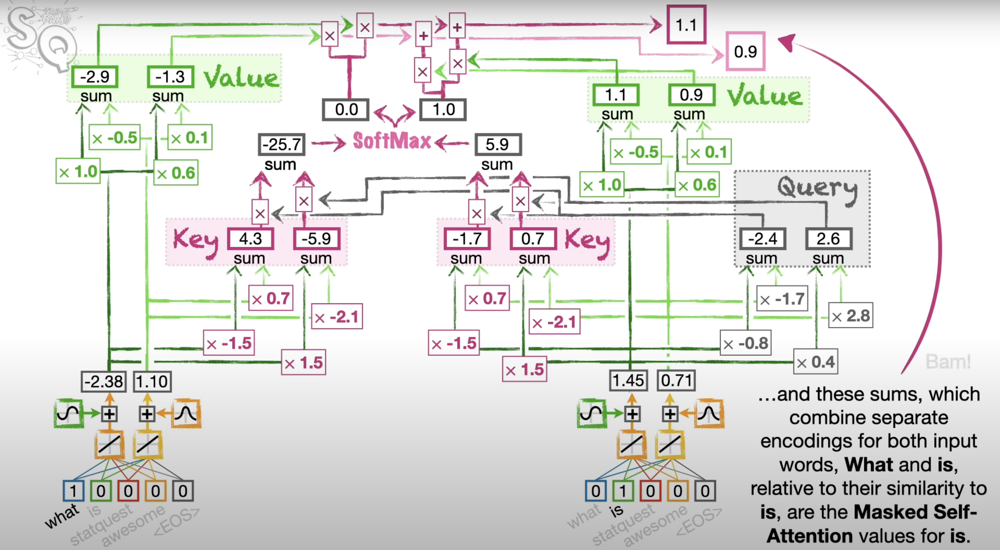
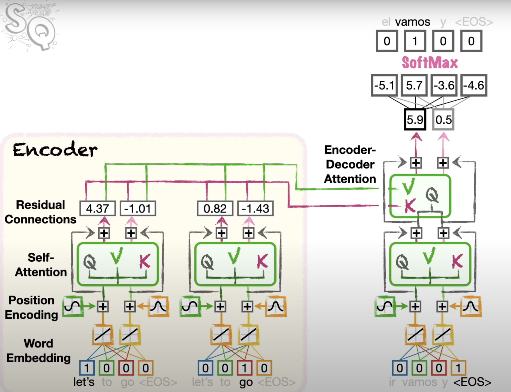
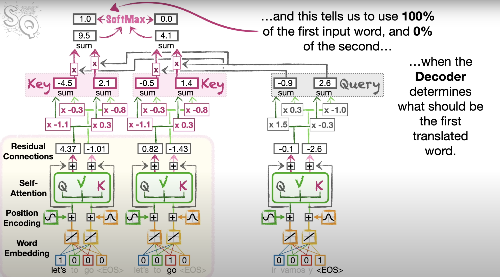

Transformer Architecture and Types
Focusing on Encoder-Only, Decoder-Only, and Encoder-Decoder Architectures
By Swadesh Swain
Date: June 26, 2024
Introduction
Overview of Transformer Architectures:
- Encoder-Only: Models using only the encoder stack.
- Decoder-Only: Models using only the decoder stack.
- Encoder-Decoder: Models using both encoder and decoder stacks.
Encoder-Only Architecture
Examples: BERT, RoBERTa, ALBERT
Structure:
- Consists of multiple layers of the encoder.
- Each layer includes self-attention and feed-forward networks.
Attention Mechanisms:
Self-Attention:
- Purpose: Allows the model to weigh the importance of different words in a sequence relative to each other.
- How it Works:
- Each word (token) in the input sequence generates three vectors: Query (Q), Key (K), and Value (V).
- The attention score is computed using the dot product of the Query with all Keys, followed by a softmax operation to obtain attention weights.
- The final output is a weighted sum of the Values based on these attention weights.
- Use Cases: Used in both encoder and decoder stacks in transformer models.
Positional Encoding: Adds positional information to the input embeddings.
Strengths and Use Cases:
- Text Classification: Understanding and categorizing input text.
- Named Entity Recognition (NER): Identifying and classifying entities in text.
- Question Answering (QA): Extracting answers from text based on a query.
- Masked Language Modeling (MLM): Predicting masked tokens to capture bidirectional context.
Decoder-Only Architecture

Examples: GPT, GPT-2, GPT-3
Structure:
- Consists of multiple layers of the decoder.
- Each layer includes masked self-attention and feed-forward networks.
Attention Mechanisms:
Masked Self-Attention:
- Purpose: Prevents the model from accessing future tokens in the sequence during training, ensuring the autoregressive property.
- How it Works:
- Similar to self-attention, but the attention score calculation includes a mask that sets the attention weights of future tokens to negative infinity, ensuring they don't contribute to the output.
- Use Cases: Used in the decoder stack for tasks requiring sequential generation (e.g., text generation).
Strengths and Use Cases:
- Text Generation: Creating coherent text based on a prompt.
- Language Modeling: Predicting the next word in a sequence.
- Autoregressive Tasks: Generating sequences one token at a time.
Encoder-Decoder Architecture

Examples: Original Transformer, T5, BART
Structure:
- Includes both an encoder and a decoder stack.
- The encoder processes the input sequence, and the decoder generates the output sequence.
Attention Mechanisms:
Self-Attention (Encoder)
Masked Self-Attention (Decoder)
Cross-Attention (Encoder-Decoder Attention):

- Purpose: Allows the decoder to focus on relevant parts of the encoded input sequence when generating each token of the output.
- How it Works:
- The decoder generates Query vectors, and the encoder provides Key and Value vectors.
- The attention mechanism works similarly to self-attention but between the decoder's queries and the encoder's keys and values.
- Use Cases: Essential for tasks requiring understanding of the input sequence to generate related output (e.g., translation, summarization).
Strengths and Use Cases:
- Machine Translation: Translating text from one language to another.
- Text Summarization: Condensing long texts into summaries.
- Text Generation with Context: Generating responses or content based on the input context.
Applications of Each Architecture
Encoder-Only:
- Sentiment Analysis: Determining the sentiment of text.
- Named Entity Recognition (NER): Identifying entities like names, dates, and locations.
- Question Answering (QA): Answering questions based on a given text.
Decoder-Only:
- Story Writing: Generating creative stories.
- Dialogue Generation: Creating conversational agents.
Encoder-Decoder:
- Translation: Converting text between languages.
- Summarization: Summarizing articles or documents.
- Conversational Agents: Generating context-aware responses in dialogue systems.
Conclusion
Comparison: Decoder-only vs Normal Transformers vs Encoder-Only
| Decoder-only Transformers | Normal Transformers | Encoder-only Transformers |
|---|---|---|
| A Decoder-Only Transformer has a single unit for both encoding the input and generating the output. | A normal Transformer uses one unit to encode the input, called the Encoder, and a separate unit to generate the output, called the Decoder. | An Encoder-Only Transformer has a single unit for processing and encoding the input, without a separate generation component. |
| A Decoder-Only Transformer uses a single type of attention, Masked Self-Attention | A normal Transformer uses two types of Attention during inference: Self-Attention and Encoder-Decoder Attention. | An Encoder-Only Transformer uses only Self-Attention, allowing each token to attend to all other tokens in the input. |
| A Decoder-Only Transformer uses Masked Self-Attention all the time on everything, the input and the output | During Training, a normal Transformer uses Masked Self-Attention, but only on the output. | An Encoder-Only Transformer uses unmasked Self-Attention throughout, as it doesn't generate sequential outputs. |
| Unidirectional attention (can only look at previous tokens) | Bidirectional attention in encoder (can look at entire input) | Bidirectional attention (can look at entire input in all layers) |
| Suitable for text generation tasks | Suitable for various tasks including translation and summarization | Suitable for tasks that require understanding of input, such as classification and feature extraction |
| Generally faster inference due to simpler architecture | More versatile but potentially slower due to encoder-decoder structure | Efficient for tasks that don't require text generation, as it processes input in parallel |
Recap:
- Encoder-Only: Best for understanding and classifying text.
- Decoder-Only: Best for generating text.
- Encoder-Decoder: Best for tasks requiring both understanding and generating text.
Future Directions:
- Efficiency Improvements: Research on making transformer models more efficient.
- Interpretability: Efforts to make model decisions more interpretable.
- Domain Adaptation: Enhancing models for specific domains or tasks.
Thank You
Thank you for your attention!
For further questions or discussions: swadeshswain226@gmail.com